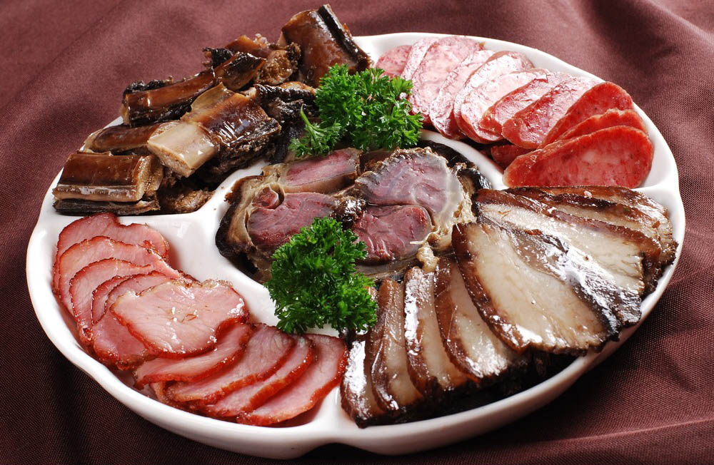
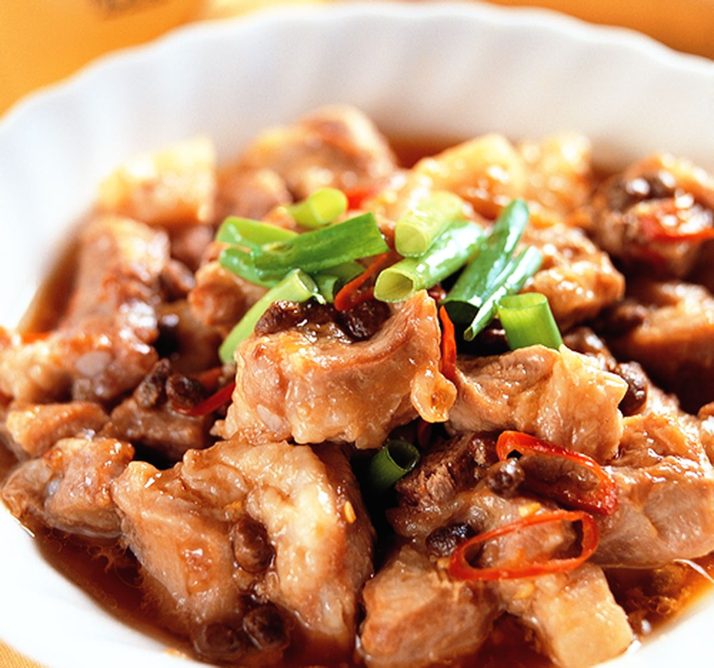

🍛 代表菜色介紹

剁椒魚頭
剁椒魚頭採用新鮮魚頭，搭配剁碎的辣椒醬蒸製，辣味鮮香濃烈，魚肉細嫩多汁，香辣開胃，是湘菜中最具代表性的招牌菜。
辣椒炒肉
辣椒炒肉是湖南人家常菜，豬肉切薄片與大量青紅辣椒快炒，油香四溢，辣味十足，色香味俱全，是下飯必備佳餚。

臘味合蒸
臘味合蒸結合多種臘肉與香料蒸製，風味醇厚，煙燻香氣濃郁，口感豐富多層次，極具地方特色，是湖南冬季餐桌上的珍饈。

豆豉蒸排骨
豆豉蒸排骨融合了發酵豆豉與辣椒的獨特風味，排骨蒸得嫩滑入味，香氣四溢，辣中帶香，是湘菜經典的下飯菜。